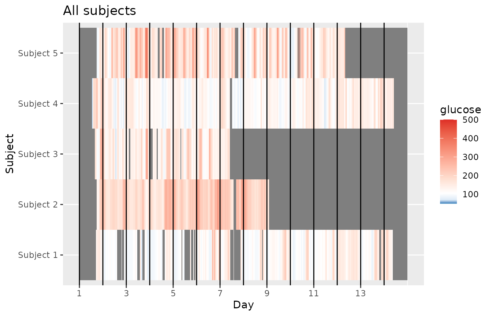
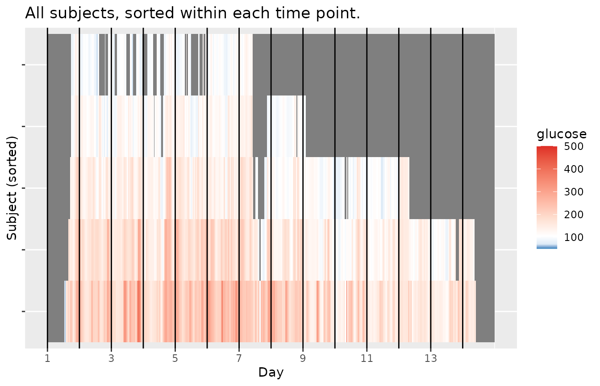
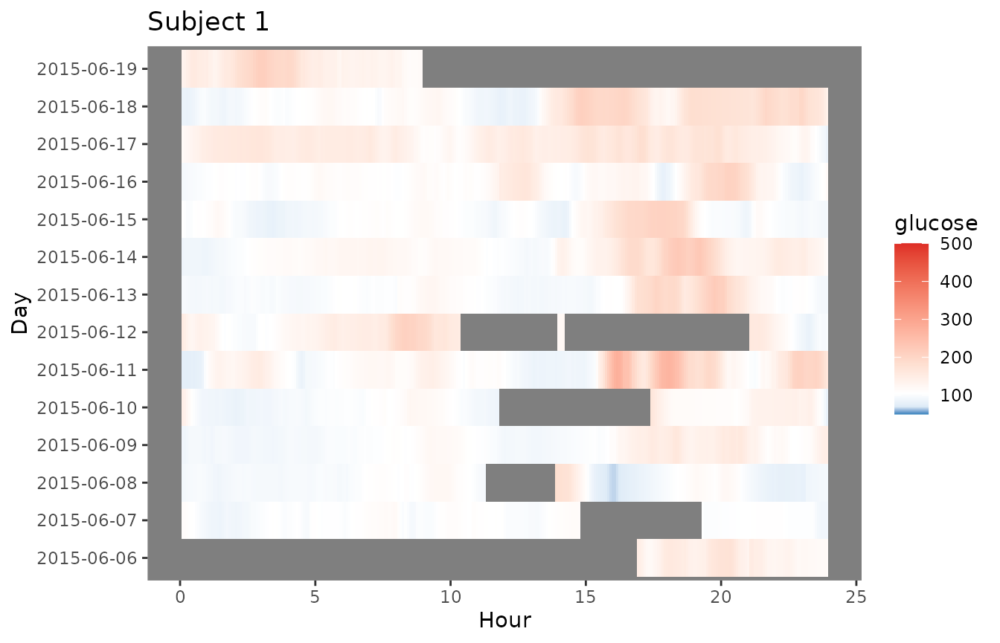
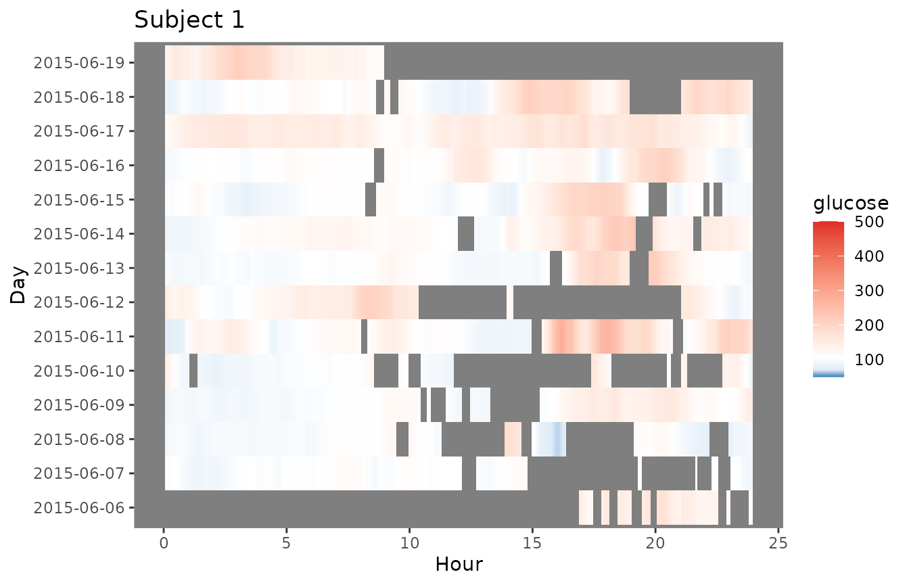
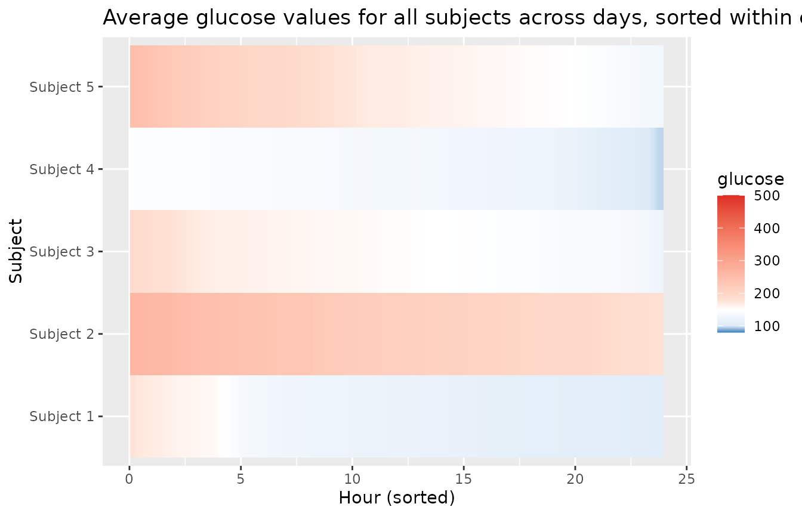
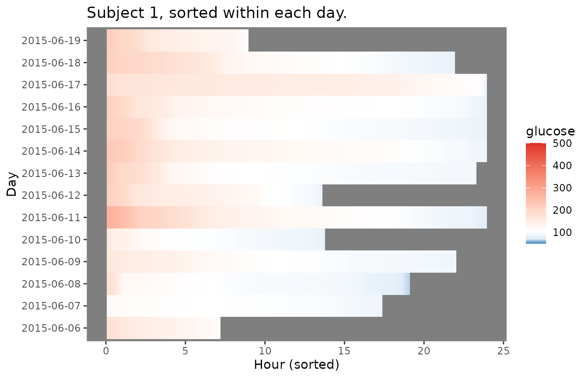
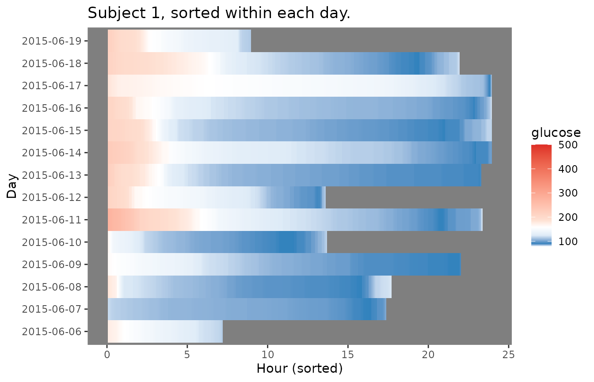

Lasagna Plots in iglu
Steve Broll, Elizabeth Chun, Irina Gaynanova, David Buchanan
Source:vignettes/lasagna_plots.Rmd
lasagna_plots.RmdThe plot_glu function supports lasagna plots by changing
the ‘plottype’ parameter. For more on lasagna plots, see Swihart et
al. (2010) “Lasagna Plots: A Saucy Alternative to Spaghetti Plots.”.
The lasagna plots in iglu can be single-subject or multi-subject. The
single-subject lasagna plot has rows corresponding to each day of
measurements with a color grid indicating glucose values.
The highest glucose values are displayed in red, whereas the lowest are displayed in blue. Thus, the numerical glucose values are mapped to color using the gradient from blue to red, which corresponds to the default ‘blue-red’ color scheme. An alternative ‘red-orange’ color scheme can be selected by the user by corresponding modification of the ‘color_scheme’ parameter.
plot_glu(example_data_1_subject, plottype = 'lasagna', datatype = "single", tz = 'EST')## Warning: Removed 14 rows containing missing values or values outside the scale range
## (`geom_tile()`).
plot_glu(example_data_1_subject, plottype = 'lasagna', datatype = "single", color_scheme = "red-orange", tz = 'EST')## Warning: Removed 14 rows containing missing values or values outside the scale range
## (`geom_tile()`).For plots with a single subject, setting the datatype parameter to “single” will display a plot where the rows represent days.
plot_glu(example_data_1_subject, datatype = 'single', plottype = 'lasagna', tz = 'EST')## Warning: Removed 14 rows containing missing values or values outside the scale range
## (`geom_tile()`).
We can additionally sort the values at each time point by setting
lasagnatype = 'timesorted'
plot_glu(example_data_1_subject, plottype = 'lasagna', datatype = 'single', lasagnatype = 'timesorted', tz = 'EST')## Warning: Removed 14 rows containing missing values or values outside the scale range
## (`geom_tile()`).
To average across days at each time point, we can use
datatype = 'average':
plot_glu(example_data_1_subject, plottype = 'lasagna', datatype = 'average', tz = 'EST')## Warning: Removed 1 row containing missing values or values outside the scale range
## (`geom_tile()`).
You can also produce plots for multiple subjects, by using data with multiple values for “id”. By default, this will produce an unsorted lasagna plot using up to 14 days worth of data with each subject displayed in separate rows.
plot_glu(example_data_5_subject, plottype = 'lasagna', tz = 'EST')
This works for all the above options sans datatype = single.
plot_glu(example_data_5_subject, plottype = 'lasagna', color_scheme = "red-orange", tz = 'EST')
plot_glu(example_data_5_subject, plottype = 'lasagna', lasagnatype = 'timesorted', tz = 'EST')
plot_glu(example_data_5_subject, plottype = 'lasagna', datatype = 'average', tz = 'EST')## Warning: Removed 5 rows containing missing values or values outside the scale range
## (`geom_tile()`).Lasagna plots are also an excellent way to visualize gaps in data. The inter_gap parameter controls the maximum length of time (in minutes) between glucose readings for interpolation to occur between them. See how more gaps appear in the plot below as inter_gap shrinks.
plot_glu(example_data_1_subject, plottype ="lasagna", datatype = "single", inter_gap = 150)## Warning: Removed 14 rows containing missing values or values outside the scale range
## (`geom_tile()`).
plot_glu(example_data_1_subject, plottype ="lasagna", datatype = "single", inter_gap = 45)## Warning: Removed 14 rows containing missing values or values outside the scale range
## (`geom_tile()`).
plot_glu(example_data_1_subject, plottype ="lasagna", datatype = "single", inter_gap = 15)## Warning: Removed 14 rows containing missing values or values outside the scale range
## (`geom_tile()`).
For further customization of lasagna plots, use the
plot_lasagna and plot_lasagna_1subject
functions.
Within plot_lasagna, the “midpoint” parameter specifies the glucose value (in mg/dL) at which the color transitions from blue to red (the default is 105 mg/dL), and the “limit” parameter specifies the range (the default is [50, 500] mg/dL)
plot_lasagna(example_data_5_subject, datatype = "average", midpoint = 140, limits = c(60,400), tz = 'EST')## Warning: Removed 5 rows containing missing values or values outside the scale range
## (`geom_tile()`).plot_lasagna allows for multi-subject lasagna plots with
the additional options of sorting the hours by glucose values for each
subject, i.e. horizontal sorting, by setting
lasagnatype = 'subjectsorted'.
plot_lasagna(example_data_5_subject, datatype = 'average', lasagnatype = 'subjectsorted', tz = 'EST')## Warning: Removed 5 rows containing missing values or values outside the scale range
## (`geom_tile()`).plot_lasagna also supports changing the maximum number
of days to display, as well as the upper and lower target range limits
(LLTR and ULTR), midpoint, and minimum and maximum values to display,
all of which will affect the colorbar.
plot_lasagna(example_data_5_subject, datatype = 'average', lasagnatype = 'subjectsorted', LLTR = 100, ULTR = 180, midpoint = 150, limits = c(80, 500), tz = 'EST')## Warning: Removed 5 rows containing missing values or values outside the scale range
## (`geom_tile()`).
plot_lasagna_1subject allows for customization of the
more detailed single subject lasagna plots. There is no datatype
parameter for plot_lasagna_1subject, but there are three
types of plots available, accessed with the lasagnatype
parameter.
plot_lasagna_1subject(example_data_1_subject, lasagnatype = 'unsorted', tz = 'EST')## Warning: Removed 14 rows containing missing values or values outside the scale range
## (`geom_tile()`).
plot_lasagna_1subject(example_data_1_subject, lasagnatype = 'timesorted', tz = 'EST')## Warning: Removed 14 rows containing missing values or values outside the scale range
## (`geom_tile()`).
plot_lasagna_1subject(example_data_1_subject, lasagnatype = 'daysorted', tz = 'EST')## Warning: Removed 14 rows containing missing values or values outside the scale range
## (`geom_tile()`).
As with the lasagna_plot function, changing the LLTR,
ULTR, midpoint, and limits parameters will affect the colorbar.
plot_lasagna_1subject(example_data_1_subject, lasagnatype = 'daysorted', midpoint = 150, limits = c(80,500), tz = 'EST')## Warning: Removed 14 rows containing missing values or values outside the scale range
## (`geom_tile()`).